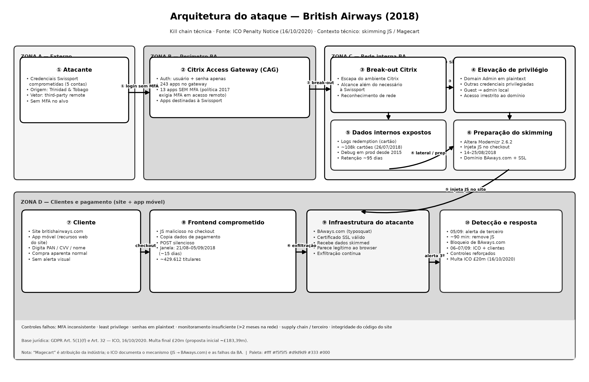
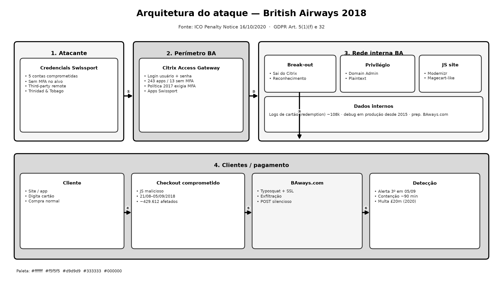
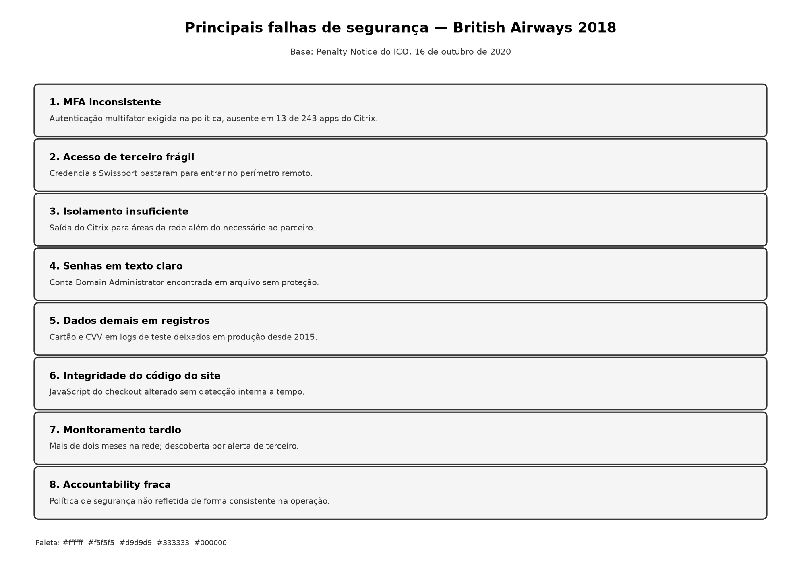
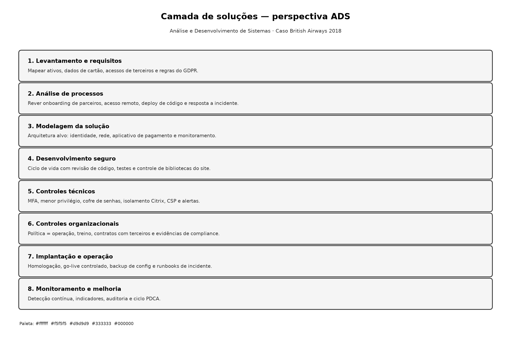

1. Contexto e impacto
Entre junho e setembro de 2018, um atacante usou credenciais comprometidas de um prestador, a Swissport, para entrar pelo Citrix Access Gateway, nosso portal de acesso remoto. Sem MFA — autenticação multifator — na conta utilizada, avançou na rede, elevou privilégios e alterou JavaScript do site, a linguagem que roda no navegador, para copiar dados de cartão e enviá-los ao domínio BAways.com.
A captura ativa no site durou cerca de 15 dias, de 21 de agosto a 5 de setembro de 2018. O ICO, a autoridade britânica de proteção de dados, estimou cerca de 429.612 titulares potencialmente afetados. Em 16 de outubro de 2020, a multa final foi de 20 milhões de libras, após proposta inicial de cerca de 183,39 milhões de libras, com fundamento nos artigos 5, parágrafo 1, alínea f, e 32 do GDPR, o Regulamento Geral sobre a Proteção de Dados.
2. Linha do tempo
A cadeia começou anos antes do skimming no site. Um recurso de teste em produção desde dezembro de 2015 registrava dados de cartão, inclusive o CVV, o código de segurança do cartão. Em outubro de 2017 a política interna já pedia MFA em todo acesso remoto. O GDPR entrou em vigor em 25 de maio de 2018.
- 22 de junho de 2018 Acesso inicial via Citrix com conta Swissport sem MFA. Cinco contas do prestador foram identificadas como comprometidas.
- 22 a 26 de junho de 2018 Saída do ambiente Citrix e elevação de privilégio, inclusive com senha de Domain Administrator — administrador do domínio Windows — em texto claro.
- 26 de julho de 2018 Acesso a registros internos com dados de cartão. Cerca de 108 mil cartões potencialmente expostos por essa via.
- 14 a 25 de agosto de 2018 Preparação e alteração do JavaScript do site, associada na literatura técnica à biblioteca Modernizr 2.6.2, e domínio BAways.com com certificado SSL, o certificado que mostra o cadeado no navegador.
- 21 de agosto a 5 de setembro de 2018 Captura ativa de dados de pagamento por cerca de 15 dias.
- 5 a 7 de setembro de 2018 Alerta de terceiro, contenção em cerca de 90 minutos, notificação ao ICO e aos clientes.
- 4 de julho de 2019 · 16 de outubro de 2020 Aviso de intenção de multa elevada; multa final de 20 milhões de libras.
A resposta após o alerta foi rápida. A prevenção e a detecção interna, porém, falharam por mais de dois meses de presença do atacante na rede.
3. Arquitetura do ataque
O incidente não foi um ataque isolado só no site. Foi uma cadeia em quatro zonas: atacante na internet; perímetro Citrix; rede interna; clientes e pagamento.


Fluxo resumido
- Credenciais Swissport comprometidas.
- Login no Citrix Access Gateway sem MFA — 13 de 243 aplicações no gateway sem MFA.
- Saída do Citrix e reconhecimento na rede interna.
- Elevação com contas privilegiadas em texto claro.
- Acesso a logs internos e alteração do JavaScript do checkout.
- Cliente digita o cartão; dados seguem para BAways.com.
- Terceiro detecta; contenção e notificações.
4. Principais falhas de segurança
O ICO concluiu que faltaram medidas técnicas e organizacionais adequadas. Agrupamos oito falhas principais que explicam por que a cadeia avançou.

| N.º | Falha | Efeito |
|---|---|---|
| 1 | MFA inconsistente | Entrada só com senha |
| 2 | Acesso de terceiro frágil | Uso de credenciais Swissport |
| 3 | Isolamento Citrix insuficiente | Alcance além do necessário ao parceiro |
| 4 | Senhas privilegiadas em texto claro | Elevação a administrador do domínio |
| 5 | Dados sensíveis em registros | Exposição de cartões antes do site |
| 6 | Integridade do código do site | Captura no checkout |
| 7 | Monitoramento tardio | Descoberta por terceiro |
| 8 | Política diferente da operação | Controles previstos sem aplicação consistente |
5. Camada de soluções sob a perspectiva de ADS
ADS significa Análise e Desenvolvimento de Sistemas. Sob essa ótica, a resposta ao incidente não é só uma lista de ferramentas: é um sistema de requisitos, processos, modelagem, desenvolvimento seguro, controles, implantação e melhoria contínua.

As oito camadas
- Levantamento e requisitos — ativos, dados de cartão, acessos de terceiros e obrigações do GDPR.
- Análise de processos — onboarding de parceiros, acesso remoto, publicação de código e resposta a incidente.
- Modelagem da solução — módulos de identidade, segmentação, segredos, frontend e monitoramento.
- Desenvolvimento seguro — ciclo de vida com revisão, testes e inventário de bibliotecas JavaScript.
- Controles técnicos — MFA, menor privilégio, cofre de senhas, isolamento e alertas.
- Controles organizacionais — política alinhada à operação, contratos, treino e evidências.
- Implantação e operação — go-live controlado e runbooks de contenção.
- Monitoramento e melhoria — indicadores, auditoria e ciclo contínuo de ajuste.
| Falha | Resposta ADS |
|---|---|
| MFA inconsistente | Requisito e MFA em todo acesso remoto |
| Acesso de terceiro frágil | Onboarding e módulo de identidade |
| Isolamento Citrix insuficiente | Segmentação e menor privilégio |
| Senhas em texto claro | Cofre de segredos e ciclo de contas admin |
| Dados em registros | Minimização e testes no ciclo de vida |
| Código do site | Desenvolvimento seguro e controles do frontend |
| Monitoramento tardio | Detecção, alertas e indicadores |
| Política ≠ operação | Governança e evidências de auditoria |
6. Conclusão
Aprendemos que um único acesso de terceiro sem MFA pode abrir caminho até o checkout de milhões de clientes. Aprendemos também que contenção rápida não substitui prevenção e detecção. Política sem implementação consistente não protege e não satisfaz o GDPR.
Seguimos investindo em identidade forte, menor privilégio, integridade do código de pagamento, minimização de dados em registros e monitoramento contínuo — com a disciplina de Análise e Desenvolvimento de Sistemas para transformar requisito em sistema operante.
Fonte factual principal: ICO — Penalty Notice: British Airways plc, 16 de outubro de 2020.
ico.org.uk/media2/migrated/2618421/ba-penalty-20201016.pdf